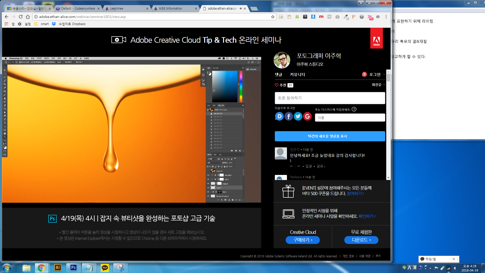

WORK

잡지 속 뷰티샷을 완성하는 포토샵 고급 기술
뷰티 아이템 촬영의 기초와 핵심
- 뷰티 실버 제품 디자인 : 은색 빛반사, 둥근 원통형의 제품을 입체감있게 표현하기 위해 필라이팅,키라이팅
- 유리병 향수 제품 디자인 : 텍스처, 내용물의 컬러감,유리 특유의 결,재질 등을 살리는 것이 중요함
- 제품의 하이라이트와 쉐도우 부분의 디테일이 중요함
- 창-정보-스포이드 클릭-잉크 총 사용량-잉크% 8~289%사이로 맞춰줘야 프린트했을때 결과가 좋음
럭셔리하고 몽환적인 분위기의 배경 만들기
- 오른쪽 손가락 ->스포이드-> 곡선(톤 밝기 조정)
- 마스크 -> 옵션 딜리트 -> 레이어마스크에 효과 > 부드러운 브러쉬 효과 / 불투명도적당히
- 10~20% / 흐름(경계선) 폭을 넓게 그라데이션 추가 / 필요한 부분 터치
흐르는 방울 및 리퀴드 표현 및 합성 방법
- 필터 -> 픽셀 유동화 : 뒤틀기도구 / 브러쉬크기로 농도 조절(폭 넓이) 50%
- 압력 숫자 낮을수록 움직이는 폭 좁음, 제품과 구슬 사이즈에 맞게 방울합성
- 끝부분은 레이어 마스크로 부드럽게 이어주기 (경도 0, 불투명도 30)
- 클리핑 마스크로 색상균형(컬러밸런스), 노출(곡선)맞추기
- 물방울 모양 블러도구로 경계선쪽을 부드럽게 만들기 (합성티 줄임)
- 포커스 아웃된 뒤제품의 물방울은 가우시안흐림효과 적용후, 필요없는 부분 마스크로 지우기
어려워도 피할수 없는 리퀴드 촬영과 리터칭 기술
- 선택영역지정> 이동/쉬프트/ 방향키로 이동, 편집 자유변형으로 팁 살리기
- 모든 합성작업은 마스크를 사용함 / 브러쉬경도, 빠른 선택도구로 필요부분 선택
- 빠른선택 : 퀵마스크 > 옵션 > 백스페이스
- 선택>수정>매끄럽게 경계선 픽셀 단위를 부르럽게 만드는 기능임 (전체적으로 부드럽게1~3px정도)
- 흐르는 메니큐어 뒤라인 겹치는 부분은 패스를이용해서 선택영역 (렌더링:0.8픽셀)만들고 마스크 씌우기
- 흐르는 방울부분도 불투명도 조절 및 마스크로 끝부분 자연스럽게 연결
수분감 팡팡 터지는 이미지를 위한 물 모양 합성 방법
- 먼저 베이스가 되는 제품 촬영이 완벽해야한다.
- 라인툴을 이용해 합성 작업할 소스를 가져온다
- 불투명도를 낮게 조절해 틀을맞춘다
- 마스크를 활용해 필요없는 부분을 브러쉬 흐름 경도를 조절해 깔끔하게 지워준다.
- 이때 상품 로고가 잘 보이게 합성해야 한다